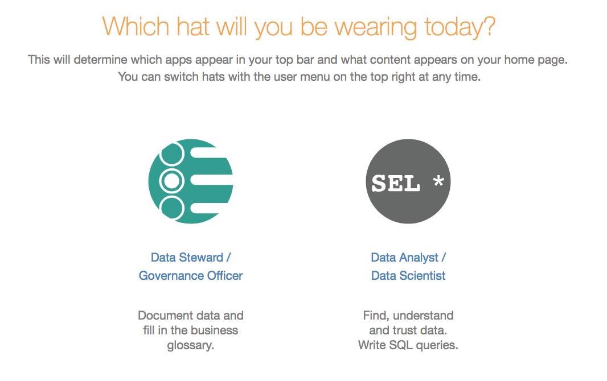

Design Homepages to Make a Good First Impression¶
Applies to release V R3 (5.6.x) and below
Note
For information on the new Home Page functionality added in release V R4 (5.8.x), refer to Customizable Homepage.
First impressions matter. That is why configuring the Alation homepage will be one of the most important things you do to create an engaging user experience and keep users coming back. The point of the homepage is to welcome users to Alation, give them any relevant news or alerts, and then direct them quickly to the appropriate locations in Alation. The flexibility of the homepage allows you to create experiences that are relevant and timely to specific user segments.
We have seen customers use the homepage in some of the following ways:
Welcoming users and providing helpful links to content, such as data policy articles and popular data sets
Educating new users about company-wide data initiatives that Alation will support, such as data migration or GDPR initiatives
Informing users of any important data-related issues, such as system downtime.
Best Practices¶
Best Practice #1: Create separate homepages for Data Stewards and Data Analysts¶
Homepages can and should be customized based on hats : Curator (for Data Steward/Governance Officer) or Analyst (for Data Analyst/Data Scientist). Users can self-select as either curators or analysts and will see the top half of the homepage dedicated to information specific to that hat.
Choosing a Hat
{kind=link}
Curators will see statistics on the amount of the data catalog that has been documented. Meanwhile, analysts will see a list of recent queries.
Curator’s Homepage
{kind=link}
The two sections on the bottom of the homepage should be tailored for each of the hats. For instance, the curator hat may include links to members of the data governance team. While analysts could have links to “gold standard” queries that can be used as models for their work. You should work with curators and analysts to design the homepage to meet their needs.
Best Practice #2: Turn off My Queries to cater to business users¶
If your user base is predominantly business users, consider removing My Queries section from the homepage. Because business users typically use Alation to explore data sets and search for reports and existing queries (rather than write SQL), they may find the listing of queries distracting. With queries removed, you’ll get more space on the homepage to convey information relevant to the primary users.
Homepage for Analysts
{kind=link}
Best Practice #3: Provide information targeted at the expected users¶
Companies with large deployments of Alation with many analysts and curators may consider creating relevant sections and links in each of the two articles on the homepage.
We have had companies with federated structures where each group has dedicated data and distinct policies. Companies like this may use logos for each division as clickable icons that direct users to another article with links to catalog pages and data sets appropriate to them. Other companies may have geographic or functional focuses or a combination thereof. You should work with the various user groups to understand how they are segmented and where they would like to be directed after they click their link.
Links by Corporate Division and Function
{kind=link}
Best Practice #4: Create content for new users and general users¶
When Alation is in the initial deployment stages with lots of new users, a good way to segment the homepage is with distinct articles to welcome new users and welcome back experienced users. Good article topics are”Getting Started” and “Quick Contacts/Links”.
The Getting Started article should be directed to new users. Think about including the following:
Links to articles from the company executive sponsors who articulate the data vision of the company and endorse Alation’s role in achieving that vision
Links to more extensive materials that help on-board new analysts, including training documents, policies, and procedures
Links to data sets and catalog pages that new users are likely to find particularly useful
The Quick Contacts/Links article is targeted to more experienced Alation users. It should include a list of links that users may find useful for quick access. These may include popular data sets, catalog pages, or articles. This would also be a good place to list contacts (either individuals or groups) that are knowledgeable about various aspects of a company’s data.
{kind=link}
Best Practice #5: Update the homepage frequently¶
As a company’s usage of Alation matures, it’s good practice to evolve the homepage to stimulate interest and maintain momentum. The homepage is a place where a you can post updates on data-related topics, such as status on curation efforts, training sessions, upcoming events, planned database outages, and other.